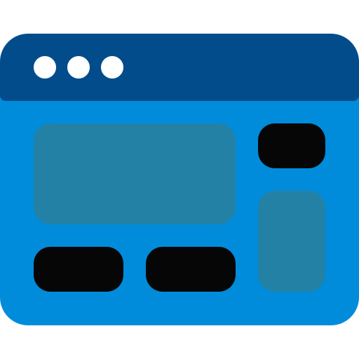

Instructional Designing
I turn raw content into objective-aligned, dev-ready learning paths. Design docs and storyboards restructure
material into clear, chunked, sequenced journeys with measurable objectives mapped to activities, checks,
and feedback for video, e-learning, or LMS builds.
Learning Builds
SCORM/xAPI-ready e-learning, microlearning, and product/onboarding modules at LMS scale—interactive and mobile-first.
Case studies, scenario flows, and varied assessments align with and evidence the objectives.
Game-based Learning
More than badges: objectives become levels with lock/unlock gates, checkpoints, and boss-style challenges.
Content, choices, feedback, and a game-like UI/UX are co-designed so engagement turns into retention and transfer.